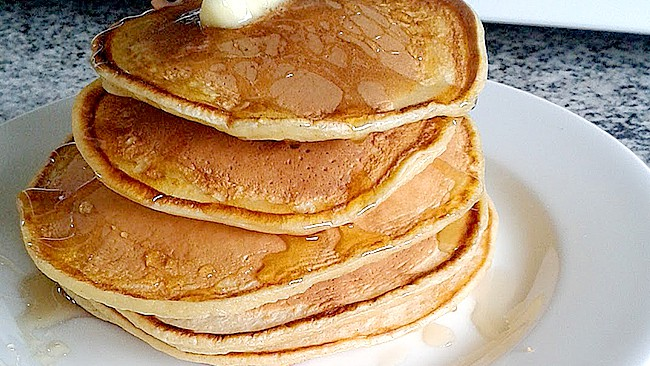

Panquecas

Descripcion
Los panqueques son un desayuno ideal y muy nutritivo, pues contienen leche y huevos, ambos ingredientes cargados de proteínas, vitaminas y nutrientes esenciales para mantener nuestra salud en perfectas condiciones.
Ingredientes
- ½ taza de Harina leudante
- ½ taza de Leche (120 mililitros)
- 2 cucharadas soperas de Azúcar
- 1 cucharada sopera de Mantequilla
- 1 unidad de Huevo
Preparacion
- Para realizar esta receta de panquecas, mezcla el huevo, la leche y el azúcar. Puedes utilizar una licuadora, batidora, varillas eléctricas o manuales, lo que te sea más cómodo.
- Cuando estén bien integrados, agrega la mantequilla y sigue batiendo. Por último, incorpora la harina poco a poco y sin dejar de remover.
- Una vez tengas la masa de panqueques lista, pon a calentar un poco de mantequilla en una sartén. Cuando esté caliente, vierte una cucharada de la mezcla y cocínala a fuego lento.
- En cuanto empiecen a salir pequeñas burbujas por todo el pancake, dale la vuelta y cocínalo por ese lado. Cuando las panquecas estén listas, puedes servirlas con miel por encima, chocolate fundido, sirope de fresa, dulce de leche, lo que más te guste.